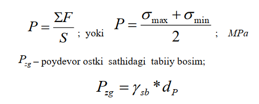
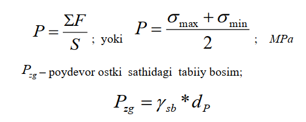

Sayoz joylashgan poydevorning cho'kish qiymatini hisoblash
Poydevor ostidagi zamin ikki qatlamdan, ya‘ni daryo o‘zanidagi grunt va
ostki qatlamdagi tub gruntdan iborat bo‘lgan hollarda sayoz joylashgan
poydevorning cho‘kish qiymatini ostki qatlamdagi tub gruntning turiga qarab ikki
xil usulda hisoblash mumkin:
a) Ostki qatlamda siqiladigan tub gruntlar mavjud bo‘lgan hol uchun sayoz
joylashgan poydevorlarning cho‘kish qiymatini hisoblash (qum, qumli va gilli
gruntlar);
b) Ostki qatlamdagi siqilmaydigan tub gruntlar mavjud bo‘lgan hol uchun
sayoz joylashgan poydevorlarning cho‘kish qiymatini hisoblash ( qoya toshlar,
konglomerat, mergel va hokazo)
Ikkala hol uchun ham sayoz joylashgan poydevorlarning cho‘kish qiymatini
hisoblashni ko‘rib chiqamiz.
Ostki qatlamda siqiladigan tub grunt mavjud bo‘lgan hol uchun
sayoz joylashgan poydevorning cho‘kish qiymati hisoblash
Sayoz joylashgan poydevorning cho‘kish qiymati poydevor ostidagi
zaminnning siqilish chegarasida joylashgan alohida elementlar qatlamlaridagi
cho‘kish qiymatlarini yig„indisini jamlash usulida hisoblab topiladi.
Poydevorning cho‘kishi zichlovchi (shibbalovchi) bosim ta‘sirida vujudga
keladi. Zichlovchi bosimning qiymati poydevor orqali zaminga uzatilayotgan
bosimning o„rtacha qiymati va poydevorning ostki sathiga nisbatan gruntning o‘z
og‘irligidan hosil bo‘ladigan tabiiy bosim qiymatlarining ayirmasiga tengdir.
Sayoz joylashgan poydevorning cho‘kish qiymatini hisoblash quyidagi
tartibda bajariladi.
Zamindagi siqiladigan qatlam chuqurligini aniqlash
Poydevor ostki yuzasing og„irlik markazidan o‘tgan tik (vertikal) o‘qda ikkita
zo‘riqish epyurasi quriladi. Ulardan biri zichlovchi (qo‘shimcha ) bosim ta‘siridan
hosil bo‘luvchi GZP epyurasi va ikkinchisi zamin gruntining xususiy og‘irligidan
hosil bo‘luvchi tabiiy bosim Gzg epyuralaridir. Bunda ikkinchi epyura
birinchisidan 5 marta kichik qilib quriladi, ya‘ni 0,2 Gzg.
Mazkur
epyuralar GZP va 0,2Gzg ning o‘zaro kesishgan nuqtasi siqiladigan qatlam
(faol
zona ) ning quyi chegerasini bildiradi.
GZP - epyurasi poydevor tagidan, Gzg – epyurasi esa zaminning sirtidan
quriladi.
GZP – epyurasini qurish tartibi
Zichlovchi bosimning qiymatini quyidagi formula yordamida hisoblanadi:
Pzich = P - Pzg
Bu yerda R – poydevor orqali zaminga tushadigan o‘rtacha bosim;

γsb = γII - suvga to‘yingan holatdagi gruntning suvdagi
muallaq solishtirma og‘irligi kN/m3;
dp - poydevorning joylashish chuqurligi
Zamindagi qo‘shimcha bosim quyidagi ifoda yordamida hisoblab chiqiladi:
GZP = α * Pzich
Bu yerda α- 5-jadvaldan olingan koeffitsient; u to‘g‘ri barchakli
poydevorning nisbiy chuqurligi m=2ƶ/b hamda uning tomonlari orasidagi
nisbat n=l/b ga qarab tanlanadi.
Eslatma: m va n ning oraliq qiymati uchun α koeffitsienti qiymati interpolyasiya yo‘li
bilan hisoblab chiqariladi.
Qo„shimcha bosimni hisoblash natijalarini quyidagi jadval ko‘rinishida
ifodalash qulayroqdir.
Qo'shimcha bosimni hisoblash natijalari

| m | Z=m*b/2, m | α | GZP = α*Pzich |
|---|---|---|---|
| 1 | 2 | 3 | 4 |
Jadvalning 1 ustuniga 5-jadvaldan olingan qiymatlar, masalan, 0,0; 0,4; 0,8; 1,2; 2,0; 2; 8; 4,0; 5,2; 6,8; 8,0; 10,0 va 12,0 yoziladi. m qiymat b/2 ga ko'paytirilib, poydevor ostki yuzasining og'irlik markazidan o'tgan tik o'qda joylashgan nuqtalarning koordinatalari topilib, 2 ustunga yoziladi. Bunda koordinata o„qlarini poydevorning tagidan boshlab hisoblash kerak. Poydevor tomonlari orasidagi nisbat n ma'lum bo„lgach, 17-jadvaldan α koeffitsientning qiymatlari ko'chirib olinib 3-ustunga yozib qo„yiladi, α ni Pzich ko‘paytirsak GZP ning qiymati kelib chiqadi, uni jadvalning 4 ustuniga yozish kerak, so'ngra bu qiymat bo'yicha GZP epyurasi chiziladi.
GZP - epyurasini chizish vaqtida zoэriqishlar masshtabini shunday tanlash kerakki, Rzich qiymat uzunligi 6-8 sm keladigan kesmaga joylashishi lozim. Ostki qatlamdagi tub gruntning yuqori sathigacha bo„lgan masofa 12-15 metrdan katta boэlsa, u holda zaminning ustidan hisoblanadigan masofani N=10 m deb olib, chiqamiz;
0,2 *G zg tabiiy bosim quydagi formula yordamida hisoblab 0,2 *Gzg
G 0,2 *Gsb * H kN/m2
So'ngra zaminning ustidan hisoblaganda 10 m chuqurlikda joylashgan nuqta 0,2 *Gzg kesmasini ajratamiz, bu kesmada 5 barobar kichraytirilgan 0,2 *Gzg epyura hosil bo'ladi. Agar siqiladigan tub gruntning yuqori sathigacha bo'lgan masofa unchalik katta bo'lmasa 0,2 *Gzg epyurani chizganda daryo o'zanidagi grunt qatlami bilan ostki qatlamdagi tub gruntning solishtirma og„irliklarini hisobga olish kerak. Bu holda N chuqurlikdagi nuqtaga ta'sir ko'rsatadigan 0,2 *Gzg chiqiladi. tabiiy bosimning qiymati quyidagi formula yordamida hisoblab chiqiladi.
N - ostki qatlam chegarasidagi joylashgan nuqtaning (yer yuzasidan hisoblangan ) koordinatasi 0,2 *Gzg -epyurani GZP – epyura ustiga qo'yib, ikkala epyuraning o'zaro kesishgan nuqtasida siqiladigan qatlamning quyi chegarasi belgilanadi va faol (aktiv) zonaning qalinligi aniqlanadi.